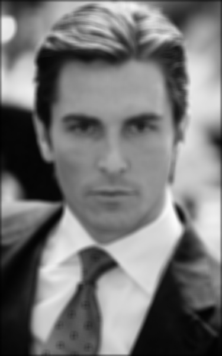
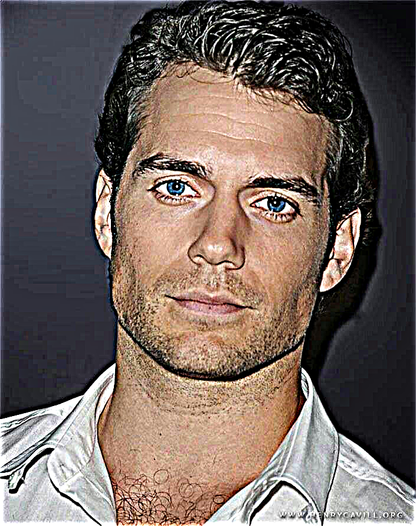
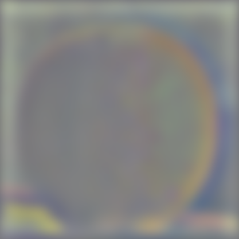

■ DECLASSIFIED - OPERATION ALPHA-TWO ■
Operation Alpha-Two: Fun with Filters and Frequencies
← Go Back
> MISSION STATUS: COMPLETE
> AGENT: Kidd Pham
> OPERATION DATE: [REDACTED]
> CLASSIFICATION LEVEL: RESTRICTED ACCESS
> AGENT: Kidd Pham
> OPERATION DATE: [REDACTED]
> CLASSIFICATION LEVEL: RESTRICTED ACCESS
Mission Objective
Advanced computational photography operations involving 2D convolutions, edge detection, frequency domain analysis,
hybrid image synthesis, and multi-resolution blending techniques. Mission includes implementation of core filtering
algorithms from scratch and application to sophisticated image manipulation protocols.
Part 1: Fun with Filters
Part 1.1: Convolution Implementation Protocol
Implementation of 2D convolution operations using both four-loop and optimized two-loop methodologies. Includes zero-padding implementation and performance comparison with scipy's built-in convolution functions.
Four-Loop Convolution Implementation
def convolution2d_four_loops(image: np.ndarray, kernel: np.ndarray) -> np.ndarray:
height, width = image.shape
kerHeight, kerWidth = kernel.shape
padHeight, padWidth = kerHeight // 2, kerWidth // 2
paddedImage = np.pad(image, ((padHeight, padHeight), (padWidth, padWidth)))
kerFlipped = np.flip(kernel, axis=(0,1))
result = np.zeros((height, width), dtype=np.float32)
for i in range(height):
for j in range(width):
runningSum = 0.0
for k in range(kerHeight):
for l in range(kerWidth):
runningSum += kerFlipped[k, l] * paddedImage[i +k, j + l]
result[i, j] = runningSum
return result
Optimized Two-Loop Implementation
def convolution2d_two_loops(image: np.ndarray, kernel: np.ndarray) -> np.ndarray:
height, width = image.shape
kerHeight, kerWidth = kernel.shape
padHeight, padWidth = kerHeight // 2, kerWidth // 2
paddedImage = np.pad(image, ((padHeight, padHeight), (padWidth, padWidth)))
kerFlipped = np.flip(kernel, axis=(0,1))
result = np.zeros((height, width), dtype=np.float32)
for i in range(height):
for j in range(width):
region = paddedImage[i:i+kerHeight, j:j+kerWidth]
result[i,j] = np.sum(region * kerFlipped)
return result
Analysis demonstrates a clear hierarchy in running speed: the four-loop implementation exhibits
the slowest runtime, while the two-loop variant achieves superior performance through NumPy's vectorized operations
that eliminate the inner kernel iteration loops. The scipy.signal.convolve2d function surpasses both custom
implementations by leveraging frequency domain computation for larger kernels - exploiting the mathematical
equivalence between spatial domain convolution and frequency domain multiplication via FFT transformations,
resulting in dramatically reduced computational complexity for extensive kernel dimensions.
All three implementations contain identical boundary management through zero-padding, applying (kernel_dimension/2)
layers of null values around the image perimeter. This padding strategy results in edge pixels having reduced
neighbor visibility, biasing their convolution outputs toward darker values due to the zero-valued padding
contribution.
Test Subject: Convolution Validation
Reference: SciPy Implementation
Christian Bale - Original

Christian Bale - Dx Operator

Christian Bale - Dy Operator

Part 1.2: Finite Difference Operator
Edge detection implementation using finite difference operators to compute image gradients. The Dx and Dy kernels detect horizontal and vertical edges through discrete differentiation.
Dx Operator Output

Dy Operator Output

Gradient Magnitude

Binary Edge Detection (Threshold: 1.0)

Part 1.3: Derivative of Gaussian (DoG) Filter
To reduce noise sensitivity inherent in finite difference operators, Gaussian smoothing was applied prior to edge detection. Derivative of Gaussian (DoG) filters were constructed by convolving the Gaussian kernel with Dx and Dy, allowing gradient estimation in a single step.
Gaussian Kernel (Large)

DoG X Kernel

DoG Y Kernel

Gradient Magnitude (DoG)

Binary Edges (DoG, Threshold 1.0)

Binary Edges (DoG, Threshold 0.3 – Single)

Binary Edges (DoG, Threshold 0.3 – Final)

Compared to raw finite difference outputs, DoG filtering produces significantly cleaner edges by suppressing high-frequency noise before differentiation. While some fine details are smoothed out, the main structural edges remain sharp and continuous. The prompt asked us to try two different approaches: (1) first blur the image with a Gaussian and then apply finite difference operators, and (2) directly convolve with derivative-of-Gaussian (DoG) filters. The "single" and "final" 0.3-threshold binary edge maps come from these two methods, yet they converge to nearly identical results. This shows that DoG-based edge detection is stable across both formulations when reasonable thresholds are chosen.
Part 2: Fun with Frequencies
Part 2.1: Image Sharpening
Using the unsharp masking technique, we sharpened both the Taj Mahal and a portrait of Henry Cavill. A Gaussian blur was first applied to extract low frequencies, which were subtracted from the original to obtain high-frequency components. Adding these back (scaled) to the original yields sharper images. This demonstrates how boosting high frequencies enhances detail while risking noise amplification.
Taj Mahal – Original
Taj Mahal – Blurred
Taj Mahal – High Frequencies

Taj Mahal – Unsharp Mask

Taj Mahal – Sharpened Result

Henry Cavill – Original

Sharpened (Amount 0.5)
Sharpened (Amount 2.0)
Sharpened (Amount 3.0)
The Taj Mahal experiment clearly shows the separation of low and high frequencies: the blurred image captures structure, while the high-frequency residuals highlight fine details. Adding the scaled residuals yields a sharpened version with more pronounced edges. For Henry Cavill's portrait, varying the sharpening strength demonstrates the tradeoff: mild sharpening (0.5) subtly enhances detail, while stronger sharpening (3.0) increases contrast but can introduce haloing artifacts. This highlights the importance of selecting appropriate scaling factors when applying unsharp masking.
Part 2.2: Hybrid Images
Hybrid images combine high-frequency components from one image with low-frequency components from another, creating a perceptual illusion where different images are visible at different viewing distances. The low frequencies dominate at distance while high frequencies become apparent up close.
Derek – Original (Aligned)
Nutmeg – Original (Aligned)

Derek – Low Frequencies (Aligned, σ=7)

Nutmeg – High Frequencies (Aligned, σ=5)

Hybrid Image Result (Aligned)

Happy Face – Original

Sad Face – Original
Happy-Sad Hybrid
Sarah – Original
Kitten – Original
Sarah-Kitten Hybrid
Low Frequency Component (σ=7)
High Frequency Component (σ=5)
Final Hybrid (Multi-scale)

The Derek-Nutmeg hybrid demonstrates the classic hybrid image effect: from a distance, the low-frequency Derek dominates the perception, while up close, Nutmeg's high-frequency details become visible. Using σ₁=5 for high-pass filtering and σ₂=7 for low-pass filtering creates optimal frequency separation. The happy-sad face hybrid creates an emotional ambiguity that shifts with viewing distance. The Sarah-kitten hybrid showcases how drastically different subjects can be combined, with the human features visible from up close transitioning to feline features far away. The frequency analysis reveals how the hybrid preserves low frequencies from one source while incorporating high-frequency details from another, creating the perceptual duality.
Part 2.3: Gaussian and Laplacian Stacks
Gaussian and Laplacian stacks decompose images into frequency bands while maintaining spatial resolution. The Gaussian stack progressively blurs the image at each level, while the Laplacian stack captures the frequency content between consecutive Gaussian levels, essential for multiresolution blending.
Apple - Gaussian Level 0
Apple - Gaussian Level 1
Apple - Gaussian Level 2
Apple - Gaussian Level 3

Apple - Gaussian Level 4
Apple - Laplacian Level 0
Apple - Laplacian Level 1
Apple - Laplacian Level 2
Apple - Laplacian Level 3
Apple - Laplacian Level 4
Orange - Gaussian Level 0
Orange - Gaussian Level 1
Orange - Gaussian Level 2
Orange - Gaussian Level 3
Orange - Gaussian Level 4
Orange - Laplacian Level 0
Orange - Laplacian Level 1
Orange - Laplacian Level 2
Orange - Laplacian Level 3
Orange - Laplacian Level 4
The Gaussian stacks show progressive blurring with σ doubling at each level, preserving overall structure while removing fine details. The Laplacian stacks reveal the frequency bands isolated at each level - Level 0 captures high-frequency details like texture, while deeper levels contain lower frequency information about shape and form. Level 4 of the Laplacian is simply the final Gaussian blur, containing only the lowest frequencies. These decompositions enable seamless multiresolution blending by allowing different frequency bands to be combined from different source images.
Part 2.4: Multiresolution Blending (Oraple and Beyond)
Multiresolution blending uses Gaussian and Laplacian stacks with a blurred mask to fuse two images smoothly
across a seam. This prevents sharp transitions and allows for natural composites. Following Burt and Adelson’s
1983 work, we applied this technique to both the classic apple-orange "oraple" example and a custom
Batman-Superman blend.
Apple

Orange

Oraple Result
The "oraple" result shows the smooth vertical seam generated by blending Laplacian stacks of the apple and
orange with a Gaussian-blurred binary mask. Fine textures from both fruits are preserved without introducing
obvious discontinuities, confirming the stack-based blending approach works as intended.
Superman (Resized)
Batman (Resized)
Batman-Superman Logo Swap
The Batman-Superman composite applies multiresolution blending with an irregular mask. Unlike a hard cut,
the Gaussian mask softly transitions between the two logos, producing a fused emblem that inherits features
from both heroes. This demonstrates how irregular masks allow for more creative blends beyond straight seams,
yielding composites that feel integrated and visually cohesive.
Sarah – Original

Kim Jisoo – Original
Sarah-Jisoo Vertical Blend
For a more creative example, we applied multiresolution blending with a vertical mask to combine
Sarah and Kim Jisoo’s portraits. The Gaussian-blurred mask allowed for a smooth transition down
the vertical seam, blending facial features in a way that avoids a harsh line through the middle.
While perfect alignment is challenging, the Laplacian stack blending ensures that edges and textures
flow naturally between the two halves, producing a cohesive fused portrait.